Роль: Product Designer
Зона ответственности: вся платформа – биржа, кошелек и платежные сервисы.
Этапы: Discovery • UX Research • UX/UI • Дизайн-система • Delivery
Международная криптовалютная платформа: биржа, кошелек и платежные сервисы. Проект под соглашением о неразглашении, поэтому без названия и с обезличенными экранами.
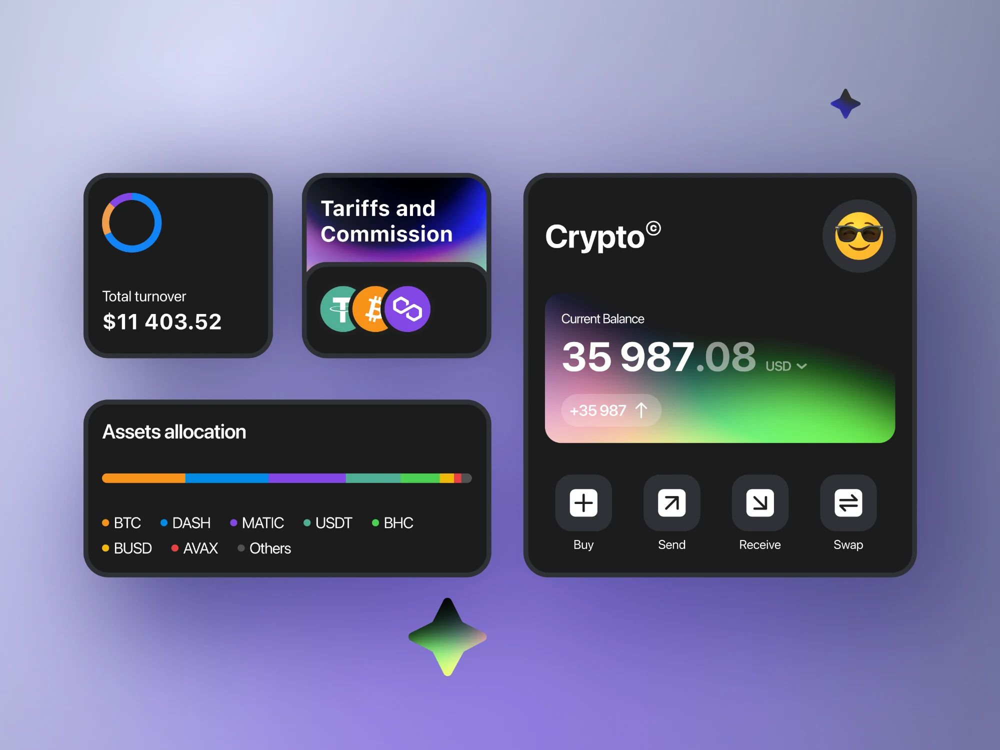
Увеличить приток капитала на платформу через разные каналы.
Решение нашли в трех каналах: больше инструментов в трейдинге, мотивация торговать через Rewards и вход в повседневные траты через виртуальные карты. Всего пять самостоятельных направлений – ниже по каждому отдельно.
Раздел выпуска и управления виртуальными картами: криптовалюта тратится как обычные деньги. Проектировал выпуск, лимиты и историю операций.
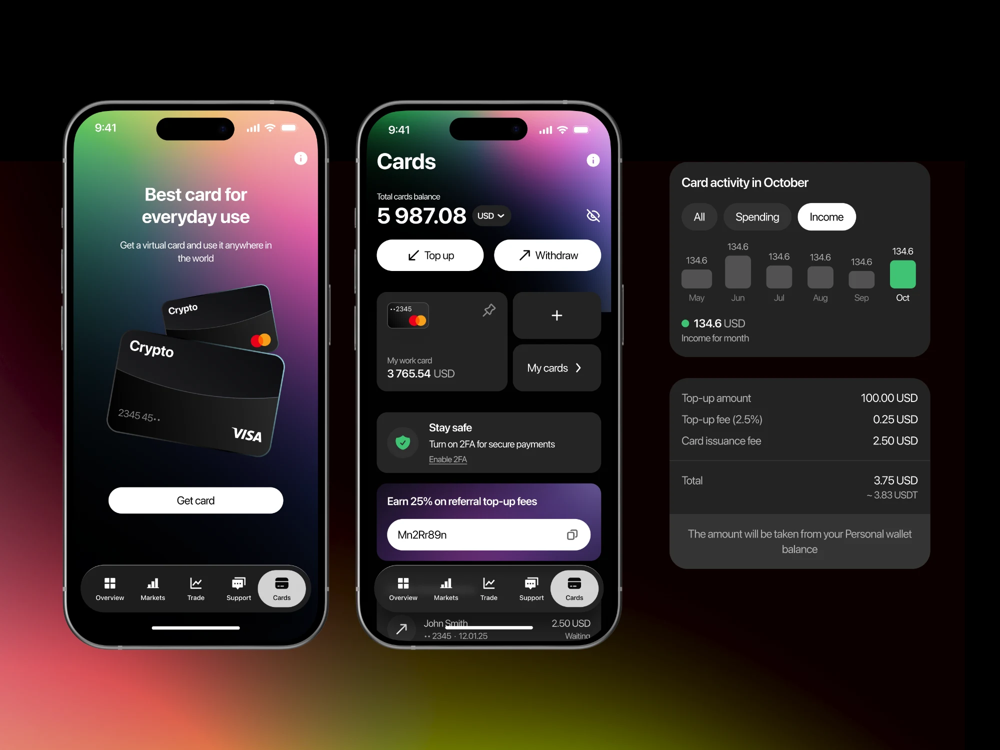
Раздел вознаграждений: задания, прогресс и начисления. Развлекательный сценарий внутри финансового продукта – отдельная задача по тону и визуальному языку: азарт не должен подрывать доверие к площадке.
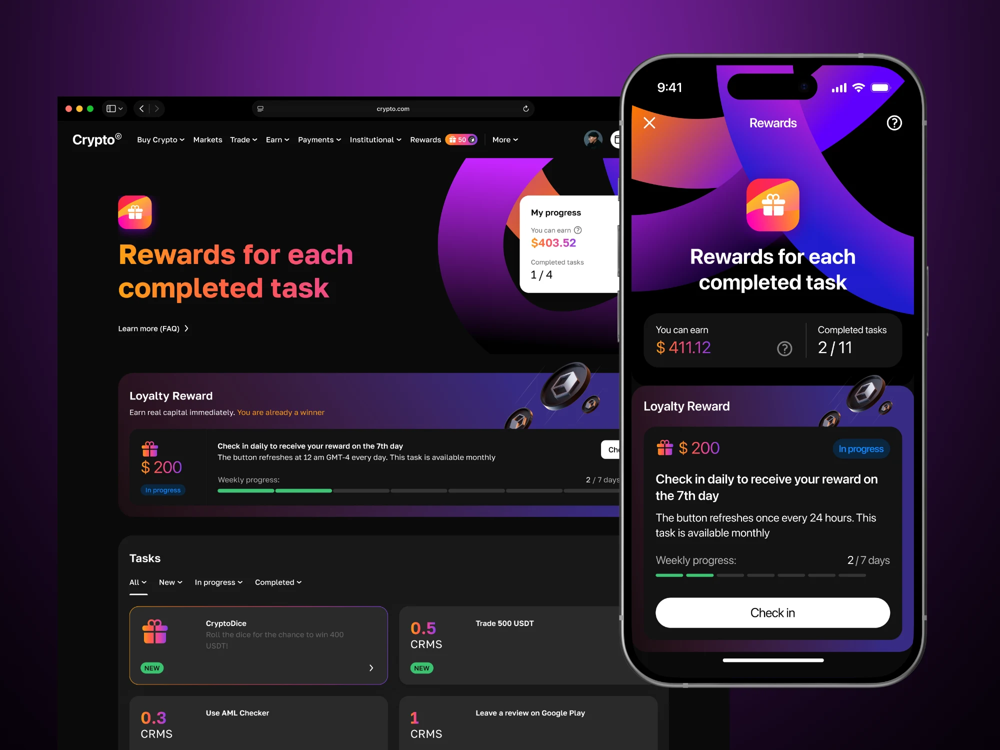
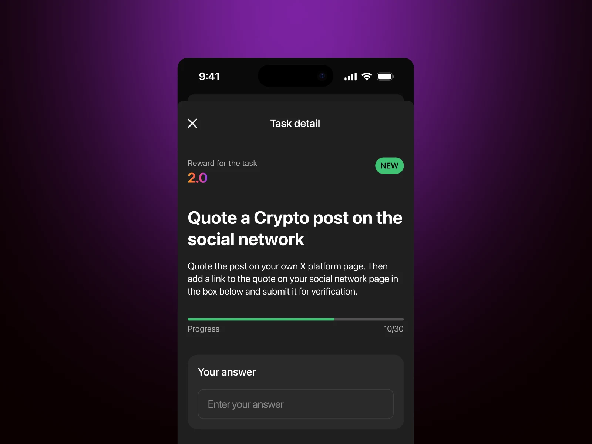
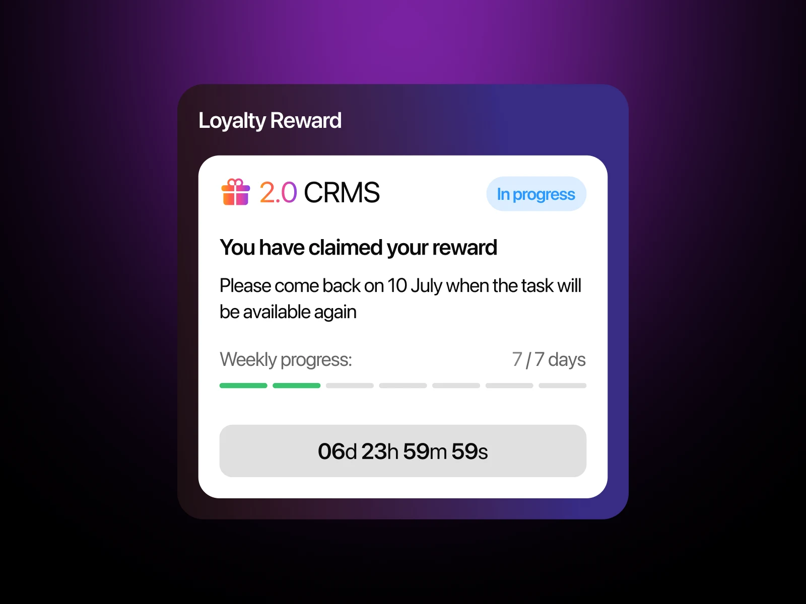
Высоконагруженный раздел: график, ордербук, стакан, история сделок и форма ордера на одном экране. Пересобрал иерархию и плотность так, чтобы профессионал не терял скорость, а новичок не терялся.
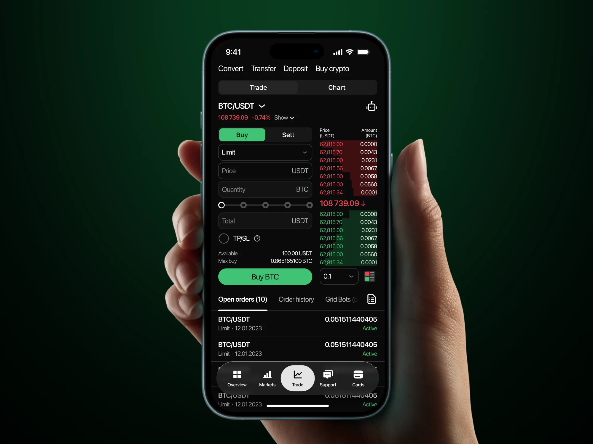
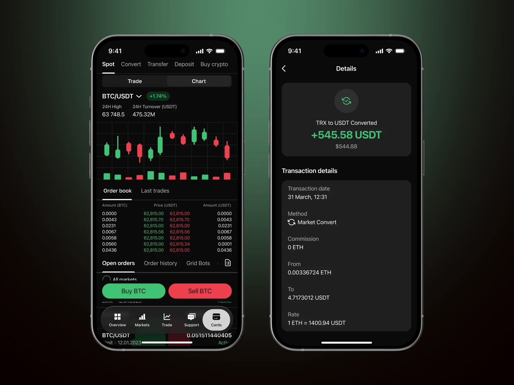
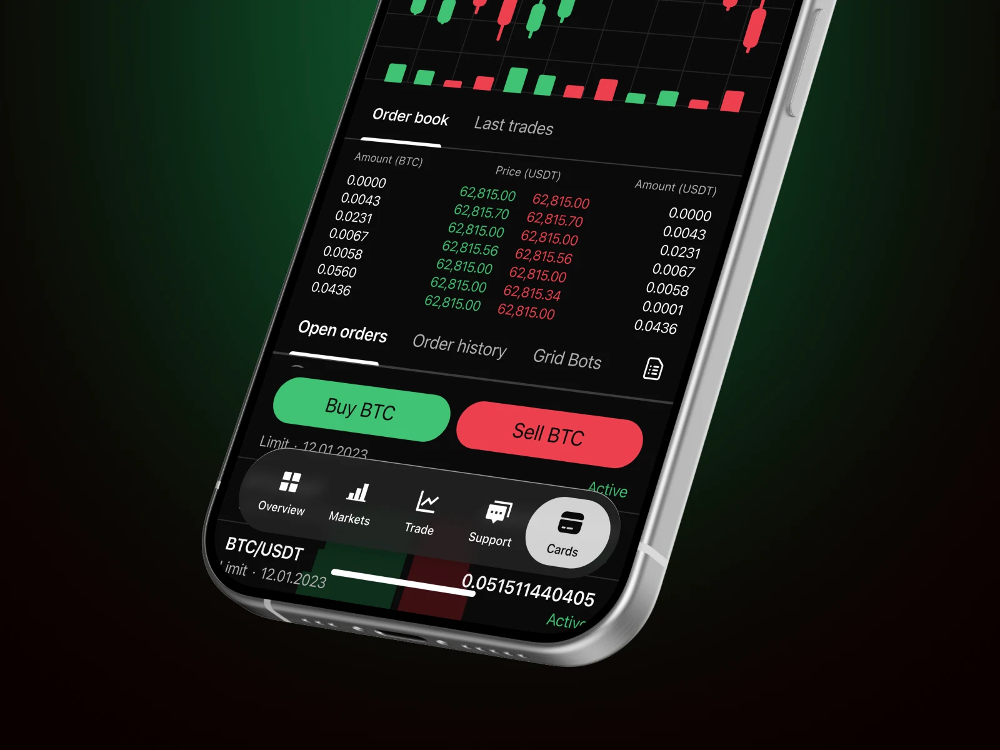
Торговые роботы, которые автоматически совершают сделки по настроенным алгоритмам. Спроектировал сценарий настройки бота так, чтобы пользователь понимал логику сетки до запуска и видел, чем рискует.
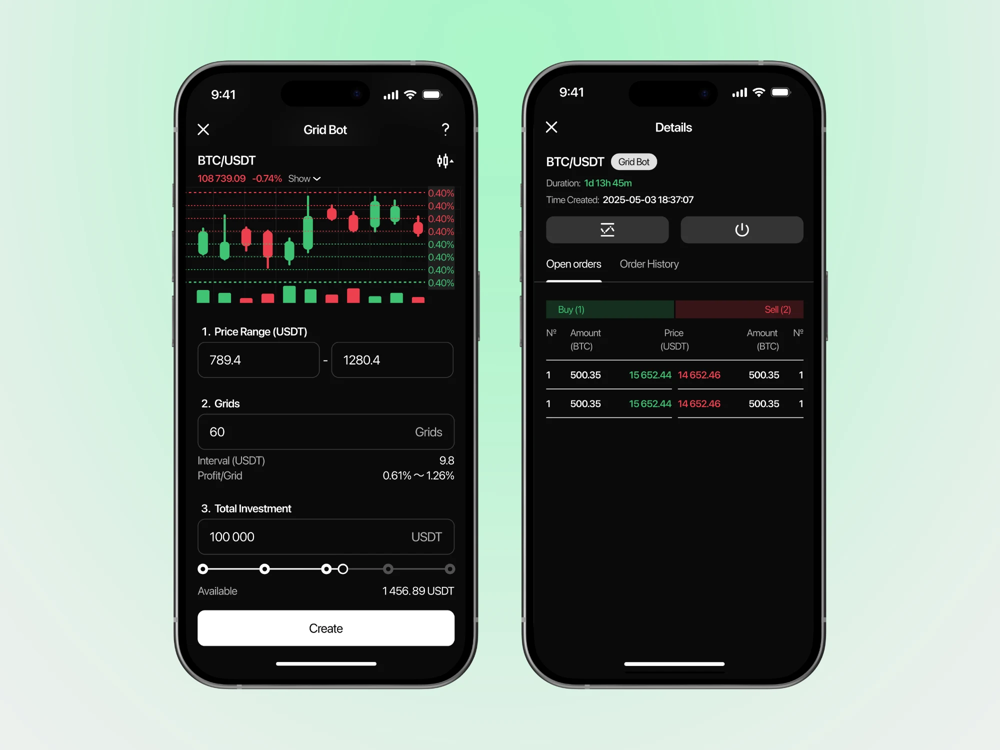
Уведомления об изменении стоимости актива. Задача – дать быстрый способ поставить условие и не превратить приложение в поток шума.
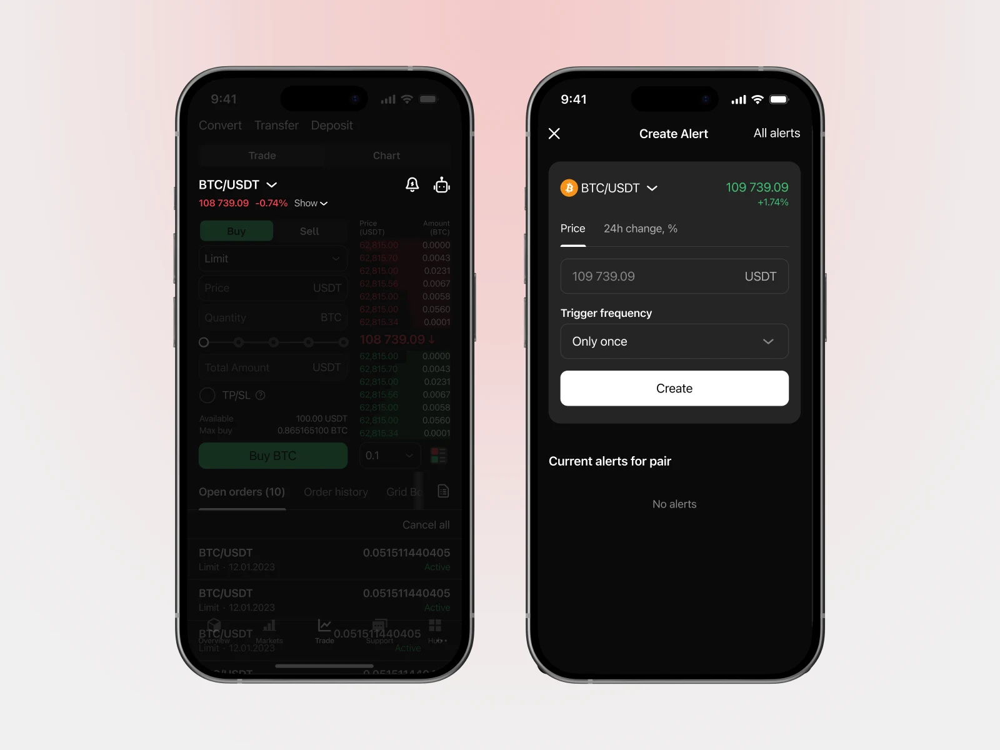
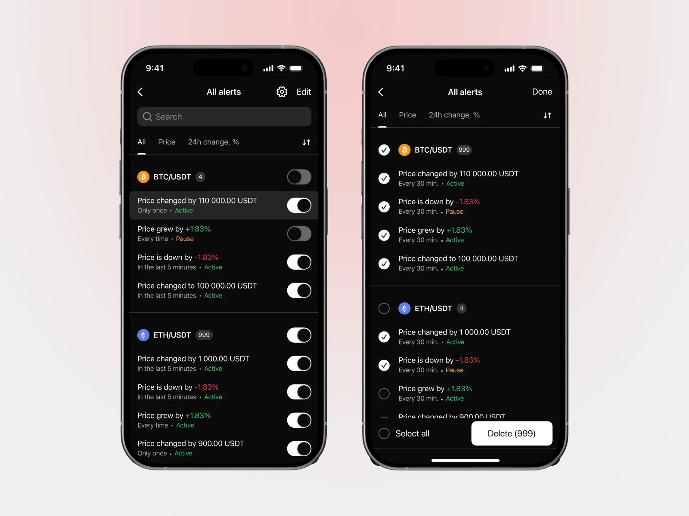
В высоконагруженном интерфейсе главная работа дизайнера – не спрятать сложность, а сделать все доступные инструменты обозримыми. Пользователь должен видеть весь набор возможностей сразу: то, что не попало в поле зрения, для него не существует, каким бы удобным оно ни было.